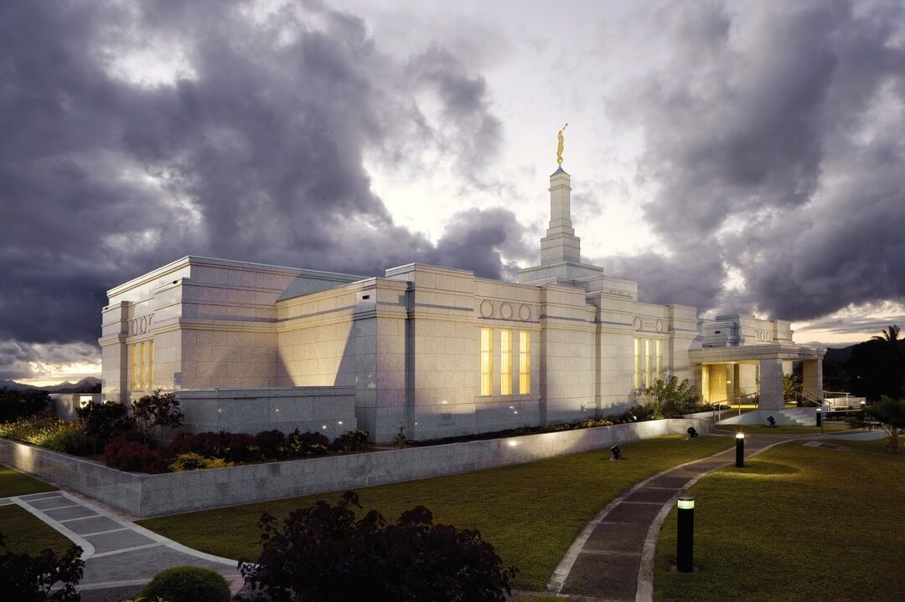

Temple Gallery
Home
Temples
About Us
Contact
GitHub
Beautiful Temples Around the World
Laie Hawaii Temple
Salt Lake Temple
Phoenix Arizona Temple
Cedar City Utah Temple

Suva Fiji Temple
Tokyo Japan Temple
New York Temple
Portland Oregon Temple
Columbus Ohio Temple